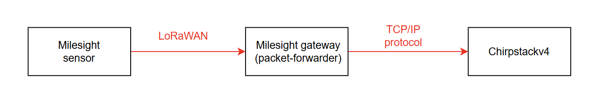
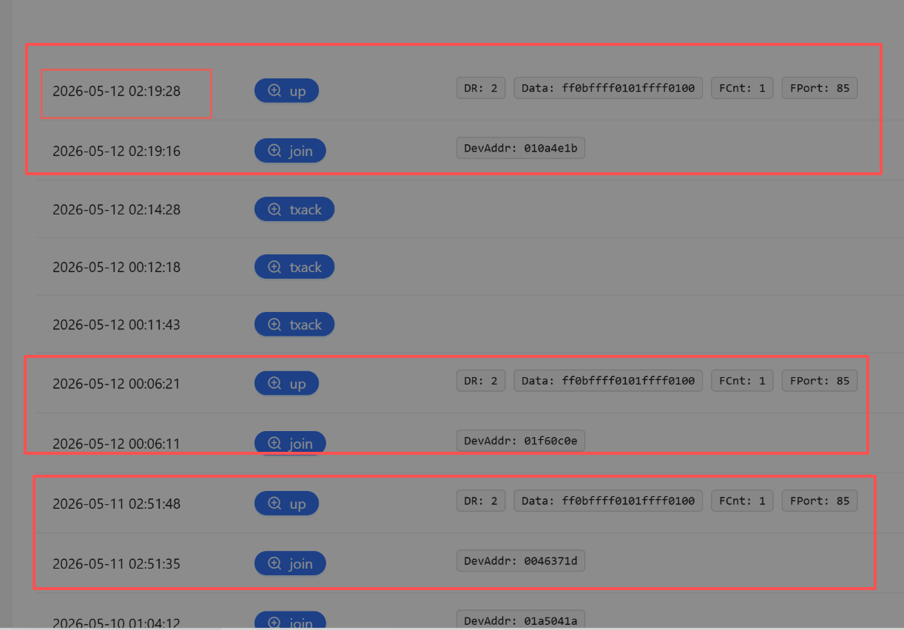
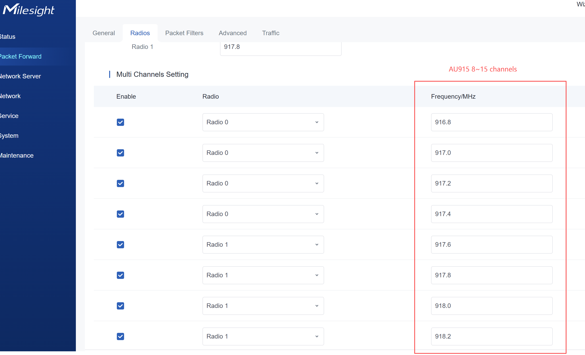
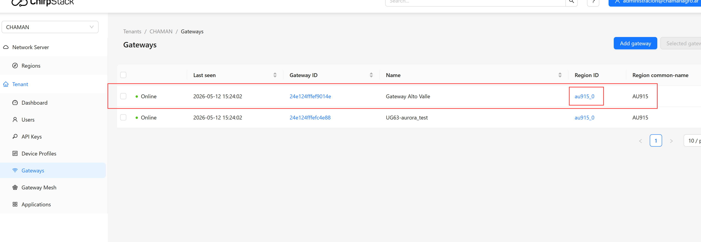
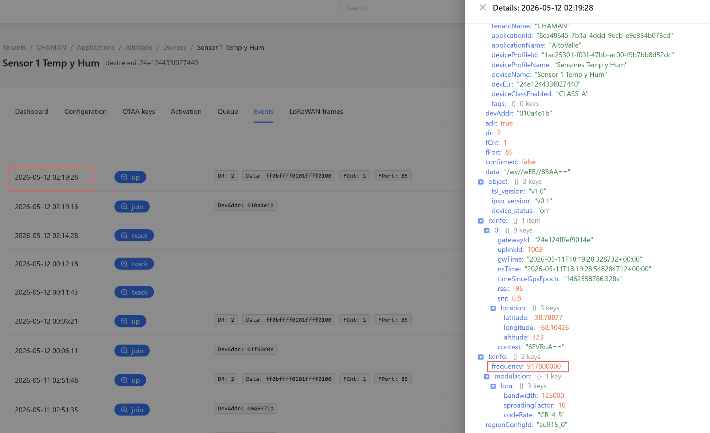
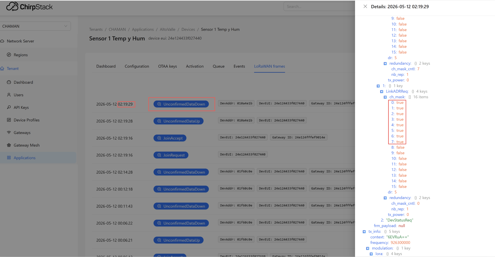
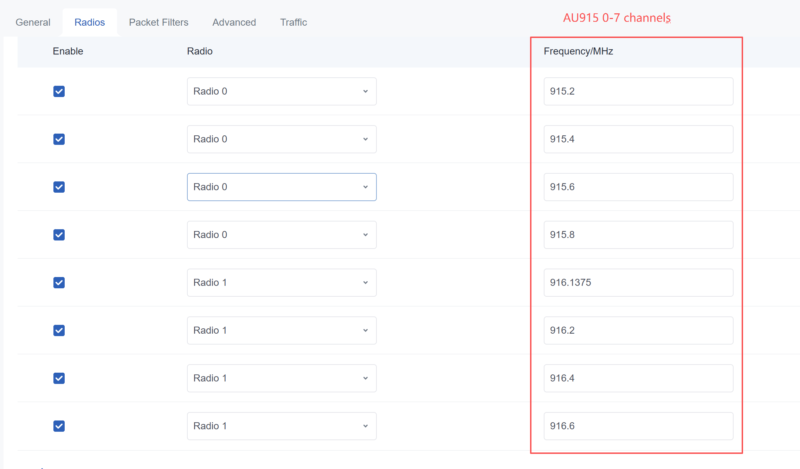

Troubleshooting the ChirpStack v4 Unable to Continuously Receive Uplink Data from Sensor

Troubleshooting: ChirpStack v4 Unable to Continuously Receive Uplink Data from Sensor
| Version | Update Time | Description | Author |
| 1.0 | June 30, 2026 | Initial version | Aurora |
Description
This article will guide you on how to ChirpStack v4 Unable to Continuously Receive Uplink Data from Sensor
Requirement
Milesight sensor
Milesight gateway(UG63 gateway as example)
Chirpstackv4
Workflow

Problem
When the sensor first successfully connects to ChirpStack v4 LNS, only the first uplink data packet sent by the sensor is received. After that, ChirpStack v4 is unable to receive any further uplink packets from the sensor.

Troubleshooting
| Step 1：Check the frequency band enabled on the gateway. |  |
Step2: Check the region_id Selected for the Gateway in ChirpStack.
AU915_0 means the frequency plan selected is AU915 channels 0 to 7.

Step3: View the reported data time and events for a sensor in ChirpStack.
the sensor reported its first data packet at 02:19:28 on the frequency 917.8 MHz, which belongs to AU915 channels 8–15. It is important to note that at 02:19:29, ChirpStack LNS sent a downlink command instructing the sensor to use AU915 channels 0–7 for uplink data.


The reason why ChirpStack LNS sends this downlink command is that the current frequency plan is set to AU915 07 channels. After the sensor joins the network for the first time, ChirpStack will send a Channel Mask command to force the sensor to transmit uplink data only on AU915 07 channels.
However, the gateway’s LoRa receiver is configured to use AU915 8~15 channels. This means the frequencies used by the sensor for uplink transmissions do not match the frequencies that the gateway is listening to. As a result, ChirpStack cannot receive subsequent uplink data reported by the sensor.
Solution:
Change the region_id to AU915_1 in ChirpStack.
Without changing the region_id, change the frequency to AU915 0-7 channels instead of AU915 8-15 channels on the gateway.
For example:

----END----